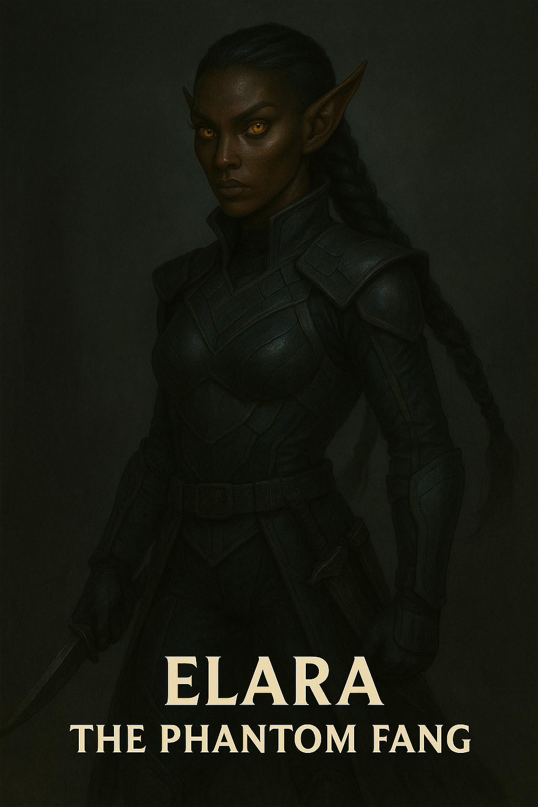

Elara

Name & Alias: Elara – The Crimson Enforcer
Age / Race / Role: Unknown / Corrupted Human / Heavy Assault, Field Control
Appearance: Athletically built with scarred crimson armor and glowing red lenses. Wields dual sabers infused with dark flame.
Affinities & Energy Types: Fire, Forbidden Dark
Threat Tier: S-Rank
Core Stats (0–10):
• Power: 9
• Speed: 7
• Technique: 8
• Intelligence: 7
• Defense: 8
• Aura Control: 7
Signature Abilities:
• Infernal Twin Strike
• Crimson Vortex Leap
• Ember Crash Guard
• Darkflame Combustion
• Field Breaker Howl
Personality Summary: Fiercely loyal to Sahil. Brutal in combat and driven by a grudge against celestial orders.
Faction or Allegiances: Ashborn Circle (Order of the Abyss)